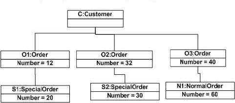
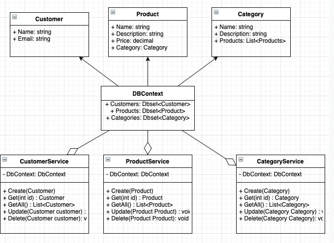

Опис об'єкта управління
Об'єктом управління є система для показання та продажу костюмів, онлайн магазин.
Клієнт використовуючи сайт має можливість подивитися костюми в наявності, обрати той, що йому сподобається, подивитися в яких магазинах він є, щоб його забрати, оформити замовлення та перевірити розмір.
Адміністратор повинен мати доступ до модифікації списку товарів, мати можливість модерувати користувачів застосунку, перевіряти замовлення та контролювати процес роботи всього додатку.
Мета розробки проекту
- Створення системи продажу товарів онлайн
- Контролювання роботи магазину
- Створення звітності по замовленням
- Практика у написанні інтернет додатків
Бізнес-задачі
- Пошук костюму
- Вибір костюму
- Замовлення костюму
- Отримання підтверждення про замовлення
Бізнес-процеси
- Отримати список костюмів
- Отримати інформацію про костюми
- Обрати костюм
- Отримати підтверждення про замовлення
- Отримати адрес на магазин, щоб забрати костюм
- Створення звітності про покупку
Сценарії дії системи
Користувач
- 1. Користувач виконує вхід до системи
- 2. Обирає костюм для замовлення (за певним мтилем чи з переліку доступних по акції)
- 3. Отримує данні про замовлення костюму
- 4. Оримує адрес магазину, щоб забрати костюм
- 5. Отримує чек, який підверджує покупку костюму
Адміністратор
- 1. Адміністратор виконує вхід до системи
- 2. Отримує доступ до бази даних
- 2.1. Працює із даними користувачів
- 2.2. Працює із даними костюмів
- 3. Підверджує впроваджені зміни
- 4. Переглядає замовлення
Лексичний та семантичний аналіз опису об'єкту управління
Результати лінгвістичного інформаційного аналізу у вигляді таблиці іменників (іменникових груп) – претендентів на роль класів та атрибутів:
| Іменник | Критерії належності до класу | Обґрунтування |
| Продукт | Клас | Сутність, що має основну інформацію про окремий костюм |
| Покупець | Клас | Сутність, що містить у собі конфіденційну інформацію про покупця |
| Товар | Клас | Об'єкт, який можна обрати та замовити |
| Категория | Клас | Відповідає за сортування товарів |
| Замовлення | Клас | Сутність, що пов’язує костюм та покупця |
| Історія | Клас | Інформація про те, коли, ким та який костюм був замовлений |
| ID покупця | Атрибут класу “Покупець” | Поле належить класу “Покупець” |
| Ім’я | Атрибут класу “Покупець” | Поле належить класу “Покупець” |
| Прізвище | Атрибут класу “Покупець” | Поле належить класу “Покупець” |
| Відвідувач | Надлишковий | Семантично те ж саме, що й Покупець |
| ID замовлення | Атрибут класу “Замовлення” | Поле належить класу “замовлення” і містить у собі інформацію як зв’язатися з лпокупцем |
| Магазин | Клас | Містить інформацію про адреса час роботи магазину |
| Адреса | Атрибут класу “Магазин” | Поле належить класу “Магазин” і містить у собі інформацію де проживає знаходиться магазин |
| Місцезнаходження | Надлишковий | Поле належить класу “Костюм” та відповідає номеру полиці та номеру кімнати, де знаходиться костюм |
| Продавець | Нерелевантний | Головний користувач системи |
| Адміністратор | Нерелевантний | Семантично те ж саме, що й Продавець, з більшими правами доступу |
| Інформаційний простор | Нерелевантний | Загальне поняття |
Але потрібно зауважити, що система потребує додаткові класи для збереження даних, які будуть реалізовуватися у вигляді дата-класів, що згодом будуть взаємодіяти з базою даних, тому результуюча діаграма класів матиме більше класів, ніж це зазначено при об’єктно-орієнтованій декомпозиції.
Лексичний та семантичний аналіз опису об'єкту управління
Результати лінгвістичного інформаційного аналізу у вигляді таблиці дієслів (дієслівних груп) – претендентів на роль зв’язків та методів класів
| Дієслово | Критерії належності до методів | Обґрунтування |
| Автоматизація процесів ведення обліку товарів | Нерелевантний | Мета створення проекту |
| Продаж костюмів | Нерелевантний | Загальні поняття місії магазину |
| Створення замовлень | Нерелевантний | Загальні поняття роботи магазину |
| Ведення статистики | Нерелевантний | Одна із задач проекту |
| Знайти костюм | Метод класу “Товар” | Показати усі та доступні костюми користувачу |
| Показати усі Костюми | Метод класу “Товар” | Метод дозволяє переглянути інформацію про всі костюми |
| Додати новий Костюм | Метод класу “Товар” | Метод відповідає за додавання нового товару та додаткову інформацію про нього |
| Знайти костюм за фільтрами | Метод класу “Товар” | Метод відповідає за пошук товару за додатковою інформацієї про нього |
| Замовити костюм | Метод класу “Товар” | Метод відповідає за створення замовлення костюму |
| Перегляд замовлень | Метод класу “Покупець” | Метод відповідає за пошук замовлення покупця |
| Видалити замовлення | Метод класу “Покупець” | Метод дозволяє видалити замовлення покупця |
| Переглянути інформацію про магазин | Метод класу “Магазин” | Метод реалізує можливість дізнатись інформацію про склад магазину |
| Перевірка чи отримане замовлення | Метод класу “Замовлення” | Метод відповідає за те, щоб дізнатися про статус замовлення |
| Показати повну інформацію про замовника | Метод класу “Покупець” | Метод дозволяє переглянути конфіденційну інформацію покупця, щоб мати змогу знайти його, в разі того, якщо він не отримає замовлення |
| Оновити конфіденційну інформацію замовника | Метод класу “Покупець” | Метод реалізує можливість додати та редагувати змінити інформацію про замовника |
Діаграма об'єктів
Функціональні вимоги замовника - UML-діаграми
Діаграма класів
Веб-застосунок буде розроблено згідно з стандартами тришарової архітектури, а також із використанням патернів Repository, Unit of Work, Data Transfer Object, Mapper.
Відповідно, буде наведено ER-діаграми шарів.
Структура проекту


Специфікації методів у вигляді таблиці з переліком сигнатури методів, семантики методів та їх параметрів
| Прототип функції | Семантика функції | Параметри |
| CreateUser | Створює нового користувача | Модель Користувача рівня бізнес логіки (DTO) |
| GetAllUsers | Повертаю всіх користувачів | Метод моделі Користувача |
| GetById(int id) | Повертає унікальний ID з DTO | Метод моделі Користувача |
| Update(User user) | Дозволяє змінити дані користувача | Метод моделі Користувача |
| Delete(User user) | Використовується для того, щоб видалити користувача | Метод моделі Користувача |
| CreateCategory | Створює нову категорію | Модель Категорія рівня бізнес логіки (DTO) |
| GetAllCategory | Повертаю всі категорії | Метод моделі Категорія |
| GetById(int id) | Повертає унікальний ID з DTO | Метод моделі Категорія |
| Update(Category category) | Дозволяє змінити дані категорії | Метод моделі Категорія |
| Delete(Category category) | Використовується для того, щоб видалити категорію | Метод моделі Категорія |
| CreateProduct | Створює новий костюм | Модель Костюм рівня бізнес логіки (DTO) |
| GetAllProduct | Повертаю всіх костюми | Метод моделі Костюм |
| GetById(int id) | Повертає унікальний ID з DTO | Метод моделі Користувача |
| Update(Product product) | Дозволяє змінити дані костюму | Метод моделі Костюм |
| Delete(Product product) | Використовується для того, щоб видалити костюм | Метод моделі Костюм |
Папка з проектом
Завантажити папку з проектомЗапуск ехе-файла
Завантажити програму